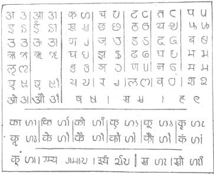

By T. G. Aravamuthan,
M.A., B.L.
THE Nagari alphabet,–rather, syllabary,–requires
simplification. It is also easy to simplify. The simplification will be a
potent impetus to national progress.
The accompanying Chart embodies an attempt at a
simplification which proposes the minimum of modification. The present and the
proposed characters are shown as pairs.
The majority of the characters have each a core–the
essential element,–garnished with a stroke on top and another at the side. Both
the strokes are needless. Knock these off and the cores emerge clear. Enlarge
the cores, where needed, to the size of the characters made of core and
strokes, and they become clearer still. The cores made up of fine combinations
of straight and curved lines, had been doomed to insignificance and ugliness by
the imprisoning strokes on top and at side: freed from those in cubuses, the
cores come out bold and beautiful.

The symbols in Nagari for consonants are often run
together into intricate combinations to make up conjunct-consonant symbols. The
integration of the characters is on a method: when, for instance, three
characters are to be integrated, the cores alone of the first two are taken and
affixed to the third which, however, is taken in full,–strokes and all.
Integration is, thus, effected by a certain amount of simplification. So, the
reader does not find the conjunct-character difficult to decipher, and the
scribe finds the character easy to write, notwithstanding transpositions in
positions. The printer, however, has to provide himself with core-characters in
addition to full-fledged ones and also to be at special pains to fit the
different characters together. This is no small handicap to the printer.
The principle of making one scriptorial unit
represent one syllable,–the basis of Nagari,–involves another complication,–the
representation of the vowels. The same vowel takes two different shapes,
according as it occurs initially in a word or it ‘animates’ a consonant. For
instance, the vowel i (as pronounced in the English word it) is
of one shape in writing it and of another shape in ti. Further, in the
latter case the symbol takes its place not beside, but above, the consonant
character. A variation is the case of a vowel like u (as in the English word put)
which gets, below the consonant character. This double change,–in form and in
position,–places no appreciable strain on the reader and imposes no special
strain on the scribe. But, it does add to the difficulties of the printer. He
has to compose two separate lines of characters and to adjust them meticulously
to give the reader one line of reading matter,–not to mention his having to
insinuate characters in almost impossible places.
The complexities of Nagari are, thus, more a
problem to the printer than to the reader or the scribe. The printer’s problem
will not arise if he has not to use types, for it is impossible to combine then
into complex syllabic characters. Were he using processes such as that of
photography, in which complex characters could be reproduced merely by
superimposing the various constituent characters, the syllabary will present no
difficulties. The present system of printing from type may at any time be
superseded by a different method, such as photographic reproduction, and, if
this happens, the present syllabic system will be found to be ideal,–with,
perhaps, a few minor modifications. But, such an event is generally considered
to be so remote that it is necessary to consider the problem of splitting up
the composite characters into the component elements so as to serve for good
types.
Let us first consider what, at first sight, looks a
simple solution,–the discarding of one of the two sets of shapes in which the
vowe1s occurred. The vowel-characters used initially may be used also for the
animating of consonants, but, as they are not distinguishable from the
consonants,–for they neither rise above nor fall below the line of
consonants,–there is bound to be a great loss in legibility: for there will be
disappearance of the vowel marks now affixed to the consonants, above or below.
Alternatively, we may eliminate the initial vowel characters and adopt,
uniformly, the superscript and subscript characters now used for the vowels
that ‘animate’ consonants. While these ensure legibility, their shapes have no
individuality, they having been designed merely as characters subsidiary to the
consonants. Separating them from the consonants and using them as independent
characters will lead to awkward results: the spaces below the superscript
symbols and those above the subscript ones will be gaps which, glaring in
themselves, will also divide two parts of the same word. A solution, however,
is not hard to seek; each of the super or sub-script symbols may be combined
with a vertical stroke which, covering the line of consonant symbols, will fill
the gap and give an appearance of continuity to the writing. An attempt in this
direction is illustrated in the chart. Slight changes in the shapes of the
vowel-marks have been effected to eliminate awkward resemblance’s.
The second step is to split up conjunct-consonants.
They are now formed by representing the subsidiary consonants in their
core-forms,–as already pointed out,–the last consonant alone being expressed in
full. It having been already suggested that the liberated cores of the
consonant characters may be accepted as equivalent to the full-fledged
characters, the conjunct-consonants may be formed by ranging the several
liberated components side by side. But, there is a catch. Each consonant
character in Nagari is really a character ‘animated’ by the vowel a: it has an a inherent in it. For example, the character for m is really
the character for the syllable ma, and that syllable is converted into
the consonant for m by the affixing of a mark. So, the ranging of two
consonant characters side by side, p and t for instance, will
give us, not pt, nor even pta, but pata. This difficulty
can be got over only by reverting to the system of core characters plus
full-fledged ones, or by adding a mark to the liberated core character to write
it down a consonant. Which device may be adopted depends on which will prove
more convenient. There is a general impression that animation by the vowel a
is commoner in Indian languages than animation by the other vowels. If this
belief is well-founded, the system of accepting each consonant symbol as
invariably animated by the vowel a,–that is, taking the consonant symbols k, g, for instance, as
representing ka, ga, respectively,–may well be retained, and a separate symbol employed for representing
what may be called the consonantization of the character. If there is no basis,
however, for the belief, it will be convenient to treat the characters is
representing only consonants. Statistics must decide the point: the printer
should not have to set up two characters if one will do.
The simplification effected by these slight
modifications brings about a great reduction m the number of types which a
printer has to keep stock of. From few hundreds it is brought down to a few
tens. Many of these modifications need not even be adopted in writing. The
modifications being very slight, no difference will be noticed if, in
writing,–as distinct from printing,–the vowel-marks are superscribed or
subscribed, as before: even the telescoping of consonants together for
conjunct-consonants may be reverted for the simpler combinations. There is no
need to compel the scribe to follow the printer, merely to satisfy theory.
But, even when simplified thus, the number of
characters is too many for employment in that great modern convenience,–the
type-writer. Here, again, the difficulty will disappear if the present crude
machine is improved on. This too appears, however, to be as far off as the
introduction of a method of printing that dispenses with the present form of
types. An attempt to bring down the number of the characters still further is,
therefore, worth the making.
Distinct characters for consonants of the series kh,
gh, ch, and so on, –what may be called the ‘aspirated’ consonants,–are
unnecessary. They may be dispensed with and a symbol for ‘aspiration’ may be
affixed to the basic symbols for the consonants, hard or soft. This suggestion
eliminates the ten aspirated consonants and effects a reduction by nine
characters.
The scheme as propounded here for the typewriter
will need only a total of about 38 characters,–about 23 for the consonants,
about 12 for the vowels–and about 3 for merely diacritical or symbolic
purposes. We secure an economy of characters greater than even the Roman
alphabet exhibits, and at the same time we retain the thoroughness which is the
characteristic of the Nagari syllabary. Even if we retain the characters for
the initial vowels and the ‘aspirated’ consonants, the aggregate number of
characters will not exceed 55 in number.
With 55 characters we have an alphabet that
deviates but slightly from the present syllabary, and with 38 characters
we have a system that deviates sensibly, but not radically,–not even
appreciably. In either case, the graphic system attains a legibility and
simplicity that are remarkable.
Refinements in design and in other practical
features may be introduced as further improvements. For instance, the symbols
for ‘animating’ vowels like u may be made to descend below the lower
line of the consonant characters so as to stand out more clearly. The
consonant–characters may be all designed to the size of an ‘em’, while the
vowel characters and the few diacritical symbols may be designed to the width
of half an ‘em’. It should even be possible to ensure that where a diacritical
mark and an animating vowel-mark occur side by side, they do not together
occupy more than half an ‘em’ in width. These devices will secure quite a
number of advantages, especially in typewriting. It should not be difficult to
provide that the carriage of a typewriter moves one unit for a consonant and
half a unit for an animating vowel, or for an animating vowel and diacritical
mark together. Such details, however, being for the technician, need not be gone
further into here.
It is hoped that this attempt,–which is all too
tentative,–at a simplification of Nagari will focus attention on an important
problem and will prompt efforts aimed at the bringing about of a much-needed
reform.